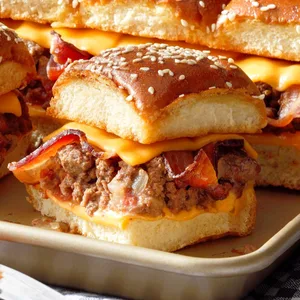
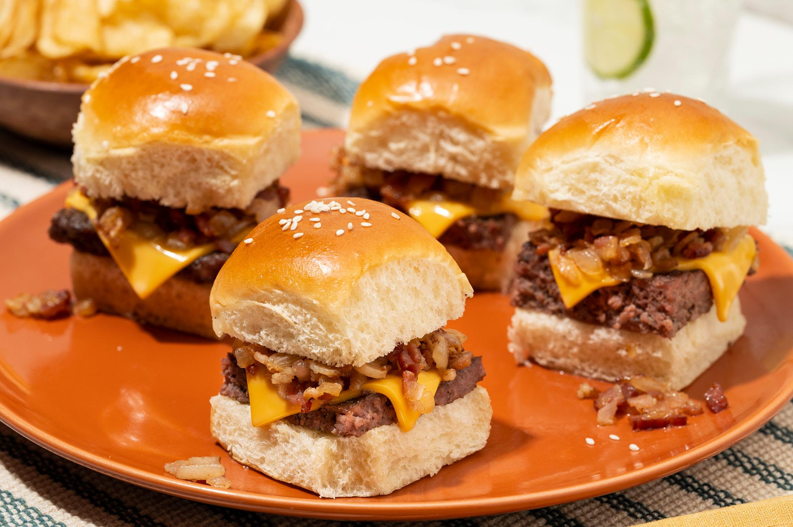
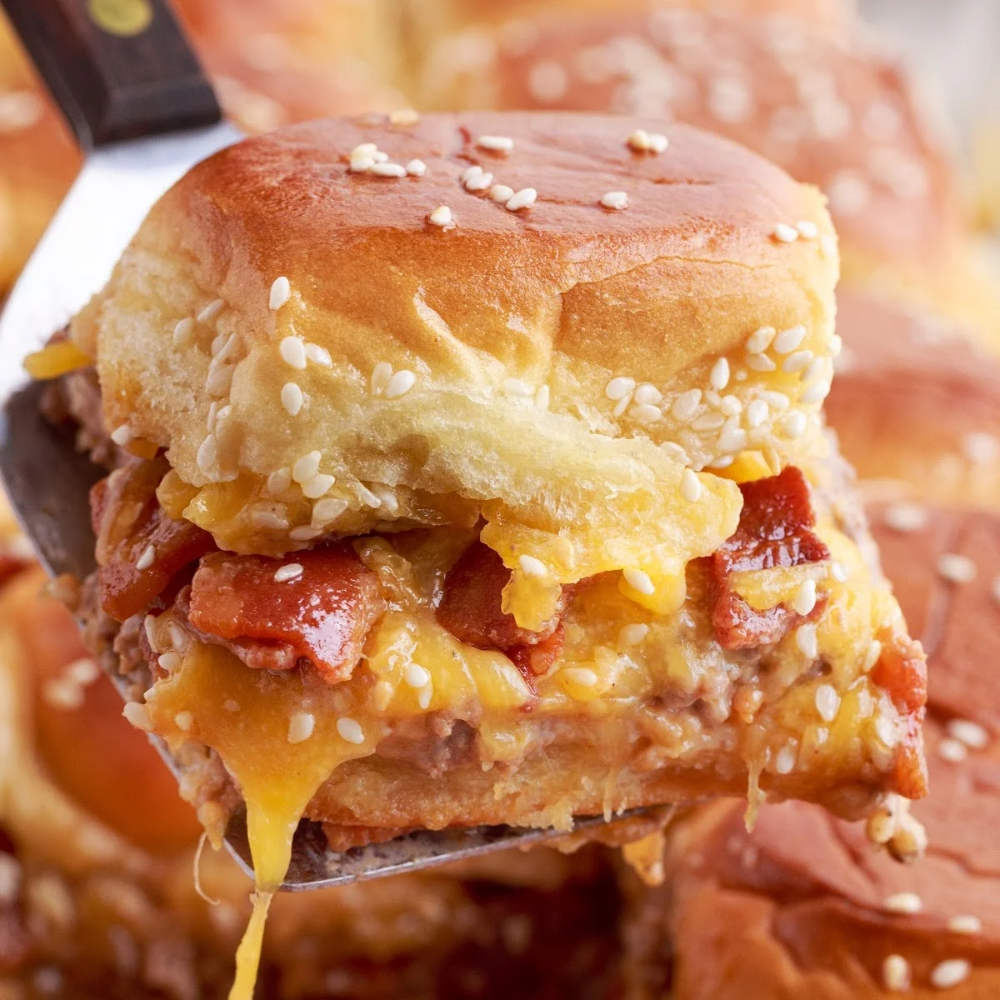
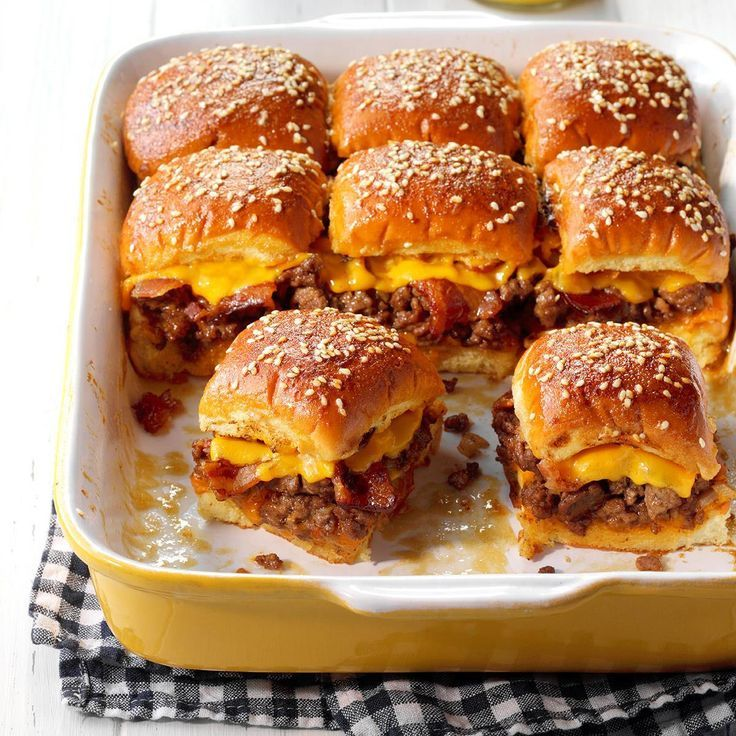

<html></html>
<head>
    <title>recipe</title>
    <meta name="viewport" content="width=device-width, initial-scale=1">
    <link rel="stylesheet" href="recipesty.css">
    <link rel="stylesheet" href="https://fonts.googleapis.com/css?family=Zain|ABeeZee|Inter">
</head>
<body>
    <div class="header">
        <h1>Flavor Fusion</h1>
    </div>
    <div class="navbar">
        <ul>
            <li><a href="frontpage.html">Home</a></li>
            <li><a href="category1.html">Appetizers</a></li>
            <li><a href="category2.html">Main Courses</a></li>
            <li><a href="category3.html">Desserts</a></li>
        </ul>
    </div>
    <div class="name">
        <p style="font-size: 250%;">Bacon Cheeseburger Sliders</p>
    </div>

    <div class="scrolling-gallery">
        
        
        
        
    </div>

    <div class="desc">
        <div class="descinfo">
            <p>
                Dive into this comfort food staple: bacon cheeseburger sliders are bursting with flavor, thanks to gooey, melty cheese, loaded burger, and crispy, savory bacon. They're a mini version of your favorite bacon cheeseburger, but better.
            </p>
        </div>

        <div class="time">
            
            <br> Total Time: 40 min
        </div>

        <div class="flip-card">
            <div class="flip-card-inner">
              <div class="flip-card-front">
                
                <br>
                Nutritional information
              </div>
              <div class="flip-card-back">
                <p>
                    serving size: 1 of 24<br>
                    calories: 380<br>
                    total fat: 24g<br>
                    carbs: 21g<br>
                    sugar: 9g<br>
                    protein: 18g<br>
                    cholesterol: 86mg<br>
                    sodium: 628mg<br>
                </p>
              </div>
            </div>
          </div>
        
    </div>

    <div class="bottom">
        <div class="ingredients">
            <h2 style="text-align: center;">Ingredients</h2>
            <hr class="divider" style="width: 70%">
            <div class="checkbox">
                <form>

                    <p>
                        <input type="checkbox" name="ingredients" class="strikethrough">
                        <label>2 packages (17 ounces each) Hawaiian sweet rolls<br></label>
                    </p>
		    <p>
                        <input type="checkbox" name="ingredients" class="strikethrough">
                        <label>22 slices American or cheddar cheese, divided<br></label>
                    </p>
		    <p>
                        <input type="checkbox" name="ingredients" class="strikethrough">
                        <label>1 can (14-1/2 ounces) diced tomatoes with garlic and onion, drained<br></label>
                    </p>
		    <p>
                        <input type="checkbox" name="ingredients" class="strikethrough">
                        <label>1 tablespoon Dijon mustard<br></label>
                    </p>
		    <p>
                        <input type="checkbox" name="ingredients" class="strikethrough">
                        <label>1 tablespoon Worcestershire sauce<br></label>
                    </p>
		    <p>
                        <input type="checkbox" name="ingredients" class="strikethrough">
                        <label>3/4 teaspoon salt<br></label>
                    </p>
		    <p>
                        <input type="checkbox" name="ingredients" class="strikethrough">
                        <label>3/4 teaspoon pepper<br></label>
                    </p>
		    <p>
                        <input type="checkbox" name="ingredients" class="strikethrough">
                        <label>24 bacon strips, cooked and broken into 1-inch pieces<br></label>
                    </p>
		    <p>
                        <input type="checkbox" name="ingredients" class="strikethrough">
                        <label>1 cup butter, cubed<br></label>
                    </p>
		    <p>
                        <input type="checkbox" name="ingredients" class="strikethrough">
                        <label>1/4 cup packed brown sugar<br></label>
                    </p>
		    <p>
                        <input type="checkbox" name="ingredients" class="strikethrough">
                        <label>4 teaspoons Worcestershire sauce<br></label>
                    </p>
		    <p>
                        <input type="checkbox" name="ingredients" class="strikethrough">
                        <label>2 tablespoons Dijon mustard<br></label>
                    </p>
		    <p>
                        <input type="checkbox" name="ingredients" class="strikethrough">
                        <label>2 tablespoons sesame seeds<br></label>
                    </p>

                    
                </form>
             </div>
        </div>        

        <div class="instructions">
            <h2 style="text-align: center;">Instructions</h2>
            <hr class="divider">
            <div class="steps">
                <ol type="1">
                    <li>Preheat oven to 350°. Without separating rolls, cut each package of rolls horizontally in half; arrange bottom halves in 2 greased 13x9-in. baking pans. In each pan, place 5 slices of cheese on bottom halves of rolls. Bake until cheese is melted, 3-5 minutes.</li><br>
	<li>In a large skillet, cook beef and onion over medium heat until beef is no longer pink and onion is tender, breaking beef into crumbles, 6-8 minutes; drain. Stir in tomatoes, mustard, Worcestershire sauce, salt and pepper. Cook and stir until combined, 1-2 minutes.</li><br>
	<li>Spoon beef mixture evenly over rolls; top with bacon and remaining cheese. Replace tops.</li><br>
	<li>For glaze, in a microwave-safe bowl, combine butter, brown sugar, Worcestershire sauce and mustard. Microwave, covered, on high until butter is melted, stirring occasionally. Drizzle or brush over rolls; sprinkle with sesame seeds. Bake, uncovered, until golden brown and heated through, 20-25 minutes.</li><br>
                </ol>
            </div>
        </div>
    </div>
</body>
</html>